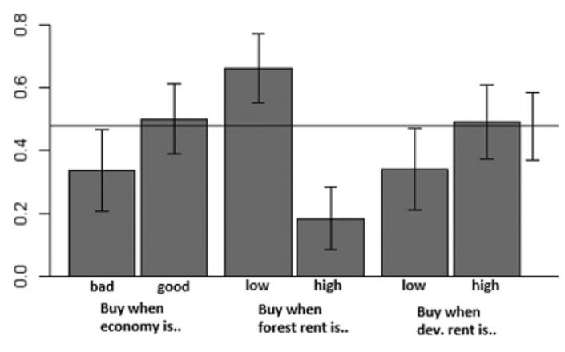
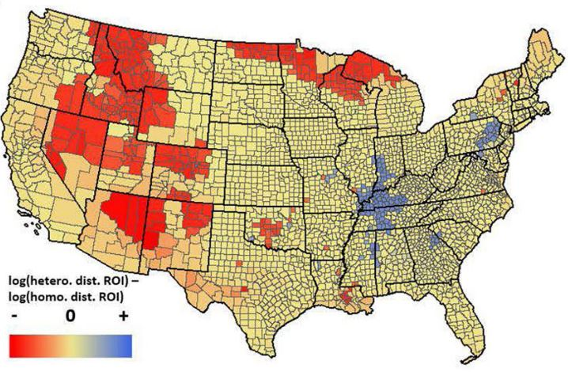

Conservation Land Acquisition Planning
2019-2022
With limited funds for conservation, it's crucial to ensure conservation actions are effective and cost-efficient. For land acquisitions aiming to protect biodiversity and ecosystem services, the timing and location are vital for maximizing conservation impact with minimal cost.
I conducted two research projects on the spatial and temporal dynamics of land acquisition planning. First, I examined how different institutions, such as NGOs and government agencies, approach acquisitions in varied market environments. Land acquisitions made in different market environments differ on how much conservation benefit they provide, because the level of threat of development on a land change with the market condition. Using a dynamic numerical simulation, I modeled how acquisition patterns influence conservation outcomes in fluctuating markets. The findings revealed that organizations often achieve better conservation results when acquiring lands during market conditions like when returns from undeveloped land-use are low, when returns from developed land-use are high, or when the wider economy is doing well often yielded greater conservation benefits through land acquisitions (Figure 1).
Second, I explored the influence of ecological disturbance heterogeneity on acquisition priorities (Figure 2). Many existing models assume consistent ecological disturbances across space, overlooking the varied impacts of human development across regions. I measured the implications of this assumption by comparing conservation outcomes between models that use homogeneous versus heterogeneous ecological disturbance data. In a study focused on the coterminous United States, assuming consistent ecological disturbances resulted in a 76% decrease in potential conservation gains for a set budget.

Figure 1. Total conservation benefit of acquired lands using various acquisition patterns under a temporally fluctuating market environment. Horizontal line shows the baseline total conservation benefit created with random acquisition.

Figure 2. Difference in the return on investment of land acquisition between assuming spatially heterogeneous ecological disturbance and homogeneous ecological disturbance by counties.